Chiến lược trẻ hóa thương hiệu Thế Giới Di ĐộngKhảo sát 124 khách hàng 16–22 tuổi, TP. HCM · Nhóm 1
VIBE CHẤT. TÔN BẢN SẮC.Tỷ lệ sở hữu thiết bị, quý II/2025 (%)
Luận giải: Điện thoại gần như phổ cập (97,9%), laptop gần một nửa (49%), máy tính bảng 30,3%. Nhóm 16–22 tuổi dùng công nghệ cho học tập, làm việc, giải trí và giao tiếp, nhưng khác nhau về ngân sách, quyền quyết định mua và người chi trả.
Số cửa hàng các chuỗi bán lẻ (tháng 3/2023)
Luận giải: Quy mô cửa hàng không đồng nghĩa với mức độ yêu thích hoặc khả năng được khách hàng trẻ lựa chọn. Cần so sánh TGDĐ, FPT Shop, CellphoneS, Viettel Store theo nhận biết, hình ảnh, cân nhắc và hành vi mua.
Cơ hội, thách thức và hàm ý nghiên cứu
Cơ hội: Thị trường công nghệ quy mô lớn; kênh trực tuyến tạo cơ hội kết nối truyền thông số với hệ thống cửa hàng, hỗ trợ khách hàng xuyên suốt hành trình mua.
Thách thức: Nhóm 16–22 tuổi không đồng nhất; dữ liệu thứ cấp chưa đủ để kết luận TGDĐ thiếu trẻ trung hoặc chưa phù hợp với giới trẻ.
Hàm ý nghiên cứu: Dữ liệu thứ cấp xác lập bối cảnh; dữ liệu sơ cấp (124 phản hồi) kiểm chứng nhận thức, nhu cầu, rào cản. Phân biệt nhận biết, nhớ đến đầu tiên và hành vi mua.
Nguồn: MWG (2026) Báo cáo thường niên 2025; Statista; Decision Lab & OMG (2015). Do chọn mẫu và phân phối bảng hỏi hạn chế tính đại diện, kết quả khảo sát chỉ mô tả mẫu, không suy rộng cho toàn bộ khách hàng 16–22 tuổi.
Nhận biết và mua: TGDĐ so với CellphoneS (%)
Luận giải: TGDĐ có độ nhận biết cao (79%, ngang CellphoneS 79,8%) nhưng chỉ 52,5% đã mua trong 12 tháng, thấp hơn CellphoneS (56,7%). Trong nhóm đã biết thương hiệu, 64% mua tại TGDĐ so với 69% ở CellphoneS. Nhận biết cao chưa đồng nghĩa chuyển đổi cao nhất, nên TGDĐ cần tăng sức thuyết phục ở giai đoạn cân nhắc. Do mẫu số và cách tính khác nhau, chưa thể kết luận nguyên nhân chọn nhà bán lẻ.
Nhóm tuổi
Luận giải: Nhóm 19–22 tuổi chiếm 63%, nhóm 16–18 tuổi chiếm 37%. Mẫu chỉ ở TP. HCM nên kết quả mang tính mô tả, không suy rộng cho toàn bộ khách hàng 16–22 tuổi.
Vai trò khi mua
Luận giải: Chỉ 40% tự quyết và tự chi trả; 30% cùng gia đình quyết định, 28% tự quyết nhưng có người hỗ trợ chi trả. Người dùng không phải lúc nào cũng là người thanh toán, nên nội dung cần chạm cả người dùng lẫn người chi trả.
Sản phẩm đã mua và dự định mua (%)
Luận giải: Điện thoại (79%), phụ kiện (62,3%) và laptop (59,3%) là ba nhóm mua nhiều nhất, nên là trọng tâm nội dung và hành trình mua. Dự định mua 12 tháng tới thấp hơn (điện thoại 43,9%, laptop 31,7%). Hành vi quá khứ không đồng nghĩa nhu cầu mới, nên phân bổ ngân sách cần xét thêm giá trị đơn hàng, biên lợi nhuận và dữ liệu bán hàng thực tế.
Cảm nhận hình ảnh (thang 1–5, trung bình 3,58)
Luận giải: Điểm cảm nhận trung bình là 3,58/5. “Truyền thống – Hiện đại” thấp nhất (3,38), gợi ý tính hiện đại là khía cạnh cần xem xét khi trẻ hóa. Tuy nhiên 3,38 chưa đủ chứng minh đa số xem TGDĐ là lỗi thời, và cũng không thể kết luận thương hiệu xa cách hay không phù hợp người trẻ (“Gần gũi” 3,68, “Phù hợp nhu cầu” 3,67).
Tiêu chí chọn nhà bán lẻ (%)
Luận giải: Giá phù hợp ngân sách (85,4%) và khuyến mãi (83,7%) vượt trội so với các tiêu chí còn lại, tiếp theo là uy tín (69,9%), bảo hành (54,5%) và sự đa dạng (51,2%). Người trẻ chọn nơi mua trước hết theo khả năng chi trả.
Rào cản khi mua tại TGDĐ (%)
Luận giải: Chính giá (53,8%) và khuyến mãi (45,4%) lại là hai rào cản lớn nhất tại TGDĐ; 31,9% thấy thương hiệu chưa phù hợp nhu cầu người trẻ, còn 27,7% không thấy rào cản đáng kể. Vì vậy trẻ hóa khó hiệu quả nếu chỉ đổi ngôn ngữ hay hình ảnh, cần gắn truyền thông với giá, ưu đãi và so sánh sản phẩm. Dữ liệu mô tả chưa chứng minh đổi giá hay khuyến mãi sẽ tăng mua.
Ưu tiên cải thiện cho HS–SV (%)
Luận giải: 65% mong có ưu đãi riêng, 54,5% muốn giá phù hợp ngân sách sinh viên, 50,4% cần tư vấn theo nhu cầu và ngân sách. Kỳ vọng tập trung vào giá trị thiết thực; truyền thông trẻ trung, gần gũi (48,8%) là yếu tố đi kèm.
Nội dung mong muốn (%)
Luận giải: Ưu đãi riêng (58,3%) và so sánh theo nhu cầu, ngân sách (50,8%) dẫn đầu. Ngoài ra 52,5% muốn câu chuyện thật từ học sinh, sinh viên, 48,4% muốn nội dung minh bạch và 47,5% muốn thông tin, giá dễ kiểm chứng. Tính trẻ trung nên thể hiện qua sự liên quan và hữu ích, không chỉ qua tiếng lóng hay hình ảnh theo xu hướng.
Nguồn tham khảo khi mua (%)
Luận giải: TikTok (71,5%) và Google (67,5%) dẫn đầu nguồn tham khảo khi mua công nghệ. Đây là nơi tham khảo khi mua, không đồng nghĩa là kênh giúp biết đến TGDĐ, nên không nên dồn toàn bộ nỗ lực vào video ngắn hay KOL/KOC.
Khi tra giá/thông tin TGDĐ
Luận giải: Khi tra giá hoặc thông tin TGDĐ, 57% vào website và 23% dùng Google. Cần đường dẫn nhất quán từ nội dung khám phá đến trang sản phẩm, công cụ so sánh và thông tin ưu đãi; hiệu quả đo bằng lượt truy cập đủ điều kiện, thêm giỏ và giao dịch, không chỉ lượt xem. Trong 121 người trả lời, 63% thỉnh thoảng và 17% khá thường xuyên truy cập website.
Tóm tắt
Luận giải tổng hợp: Khảo sát cho thấy TGDĐ nhận biết tốt nhưng còn khoảng cách giữa nhận biết, lựa chọn mua và kỳ vọng của khách hàng trẻ. Chiến lược trẻ hóa cần tập trung vào ba hướng: (1) tăng chuyển đổi từ nhận biết sang mua hàng; (2) thể hiện giá trị thiết thực và cá nhân hóa tư vấn theo người dùng và người chi trả (nhóm 16–18 tuổi cần kết nối cả phụ huynh, nhóm 19–22 tuổi cần thông tin theo nhu cầu cá nhân); (3) hiện đại hóa hình ảnh và nội dung truyền thông theo hướng gần gũi, hữu ích.
Các câu hỏi nhiều lựa chọn nên tổng tỷ lệ có thể vượt 100%. Kết quả mô tả trên mẫu 124 người, không suy rộng cho toàn bộ khách hàng 16–22 tuổi.
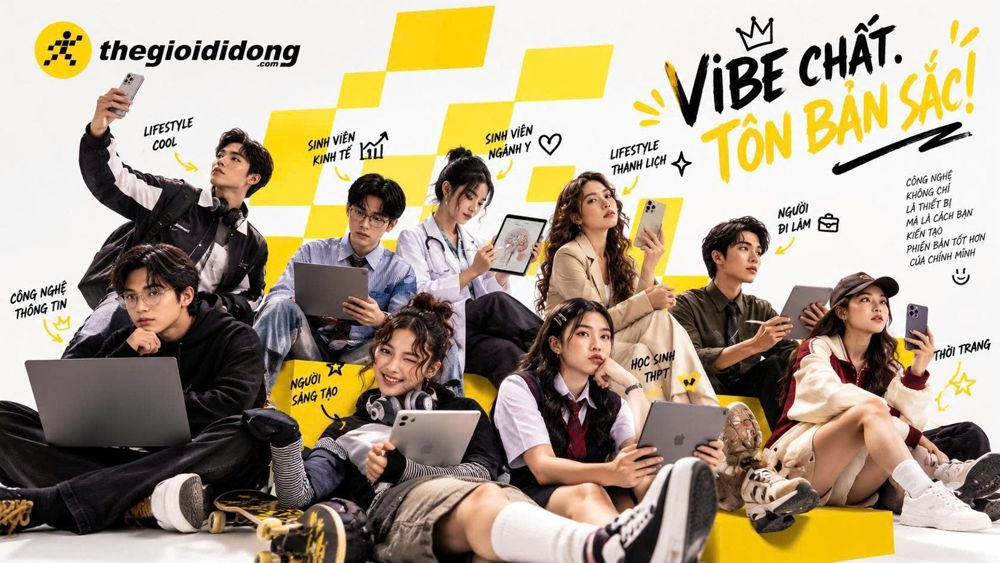
Big Idea & insight
“Công nghệ không định nghĩa bạn. Bạn định nghĩa cách mình dùng công nghệ.”
Giả thuyết insight: Khi chọn thiết bị công nghệ, người trẻ muốn tìm sản phẩm phù hợp với cách mình học, sống và sáng tạo; giữa nhiều lựa chọn, thông số và xu hướng, họ cần được hỗ trợ chọn theo nhu cầu của chính mình, thay vì chỉ chạy theo điều đang được chú ý.
Bộ ảnh mẫu key visual theo từng nhóm khách hàng (rê chuột để xem, bấm để phóng to)
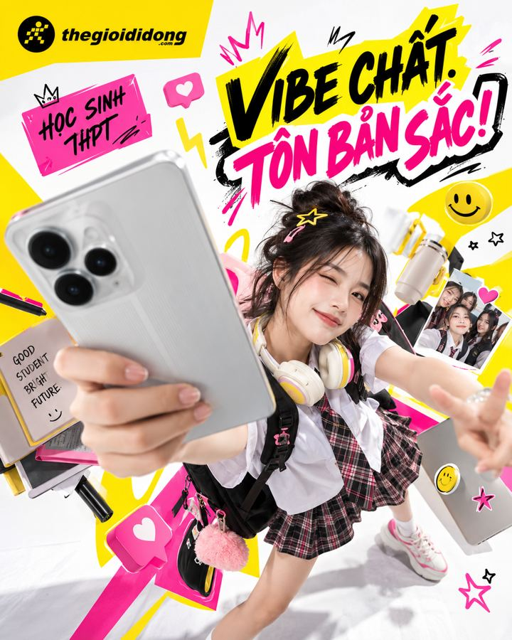
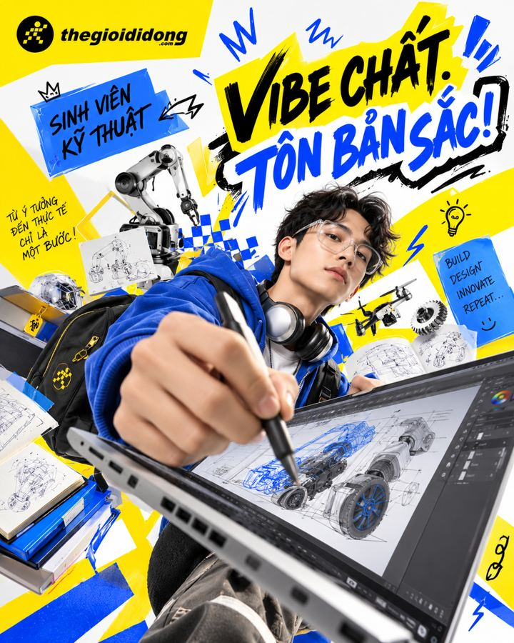
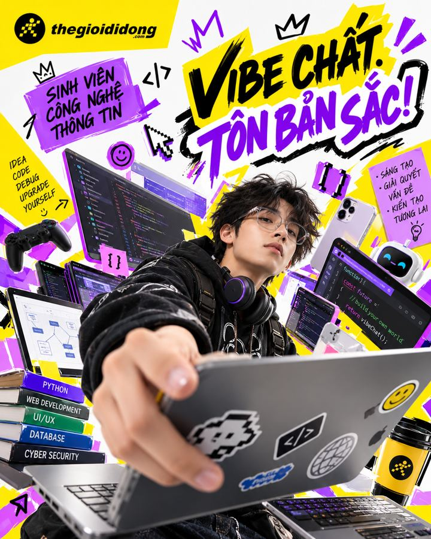
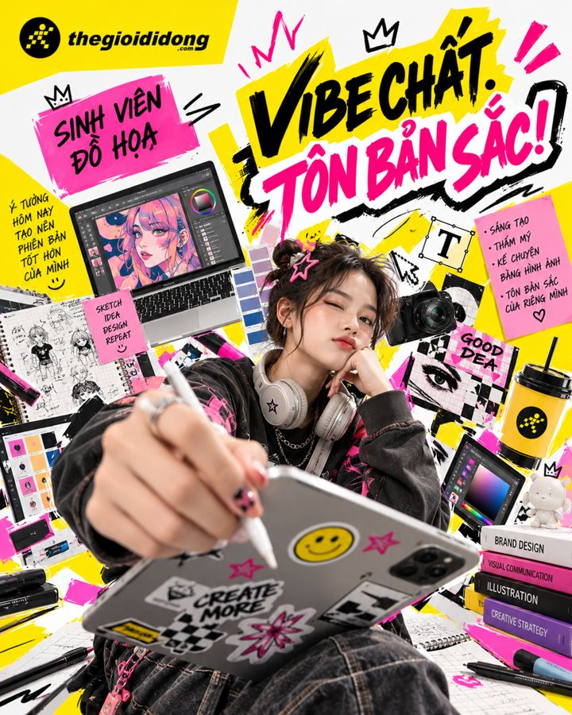
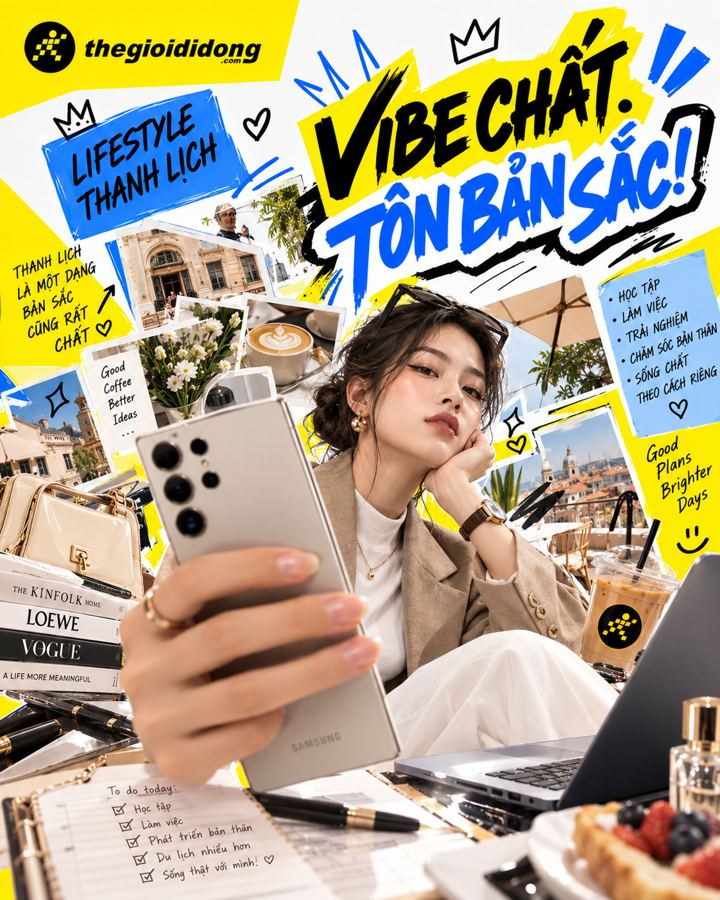
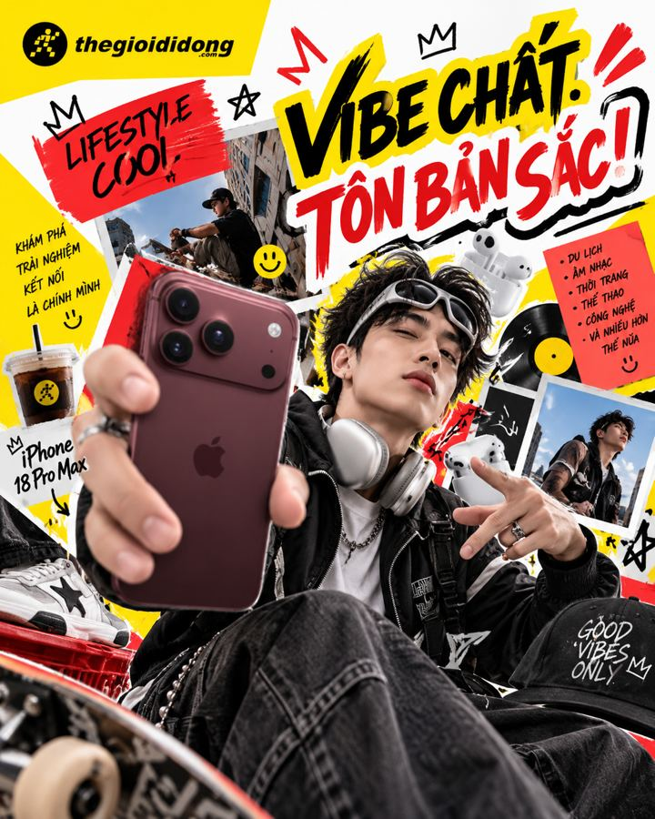
Luận giải: Chín ấn phẩm dùng chung một bộ nhận diện và thông điệp “VIBE CHẤT. TÔN BẢN SẮC.”, chỉ đổi màu chủ đạo, bối cảnh và đạo cụ theo từng nhóm: học sinh, sinh viên các ngành và người trẻ theo phong cách sống. Cách làm này thể hiện ý tưởng “một thông điệp thống nhất, nhiều cách thể hiện”, giúp mỗi nhóm thấy mình trong chiến dịch. Đây là sản phẩm sáng tạo minh họa, hiệu quả thực tế cần được kiểm chứng bằng thử nghiệm thông điệp.
Năm vấn đề rút ra từ khảo sát
79% biết, 64,9% nhớ đầu tiên nhưng 52,5% mua (CellphoneS 56,7%).
85,4% quan tâm giá; 53,8% thấy giá chưa phù hợp; 65% muốn ưu đãi riêng.
50,4% muốn tư vấn theo ngân sách; 50,8% muốn so sánh sản phẩm.
“Hiện đại” 3,38/5 thấp nhất; 48,8% muốn truyền thông trẻ trung.
TikTok 71,5%, Google 67,5%, website bán lẻ 59,3%.
Hướng giải quyết: Từ năm vấn đề, nghiên cứu đề xuất ba nhiệm vụ bổ trợ: Brand Campaign (làm mới hình ảnh, lan tỏa thông điệp), STUDENT VIBE+ (quyền lợi thiết thực cho học sinh, sinh viên) và VIBE FINDER (hỗ trợ chọn thiết bị theo nhu cầu, ngân sách).
9 chân dung khách hàng
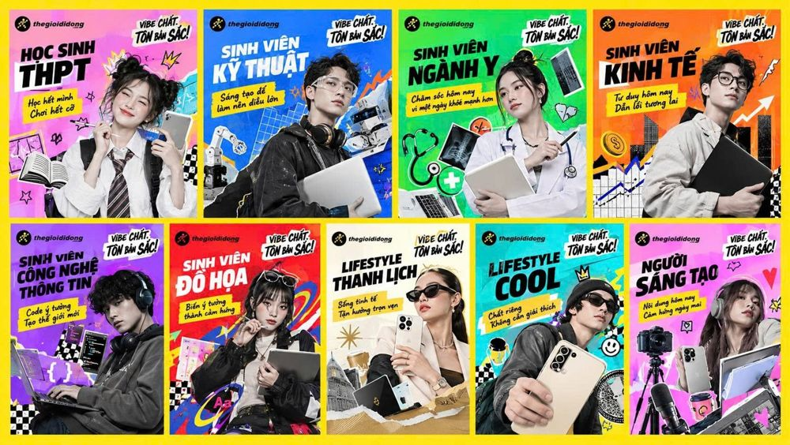
Luận giải: Chín chân dung là cách thể hiện một thông điệp thống nhất cho nhiều bối cảnh học tập, sống và sáng tạo. Việc phân khúc nội dung theo độ tuổi cần được kiểm tra thêm bằng bảng chéo giữa tuổi, vai trò mua và rào cản trước khi cá nhân hóa sâu.
Ba lớp giá trị của Big Idea
Giá trị chức năng: Hỗ trợ khách hàng hiểu, so sánh và lựa chọn thiết bị theo nhu cầu và khả năng chi trả.
Giá trị cảm xúc: Tôn trọng sở thích và lựa chọn cá nhân, khuyến khích người trẻ dùng công nghệ phục vụ mục tiêu của mình.
Giá trị thương hiệu: Hình ảnh hiện đại, gần gũi kết hợp bảo chứng về sản phẩm, thông tin minh bạch, tư vấn, bảo hành và hậu mãi. TGDĐ không phủ nhận giá trị hiện có mà thể hiện bằng ngôn ngữ phù hợp hơn.
Ba trụ cột sáng tạo và định hướng sản phẩm (Bảng 1)
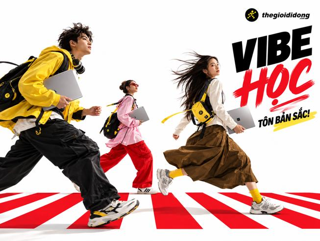
Laptop ASUS, Acer, Lenovo, HP; iPad, Galaxy Tab; phụ kiện học tập và thiết bị ngoại vi. Nội dung nhấn vào tính hữu ích, hiệu suất, giá trị theo ngân sách.
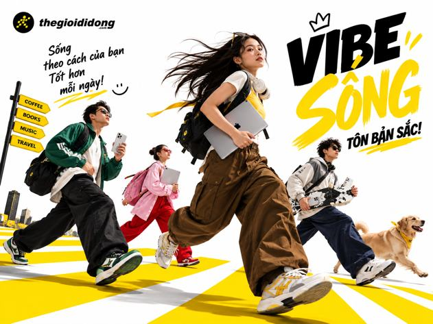
iPhone, Galaxy, OPPO, Xiaomi; AirPods, Galaxy Buds; Apple Watch, Galaxy Watch. Thể hiện sự đa dạng sở thích và phong cách sống.
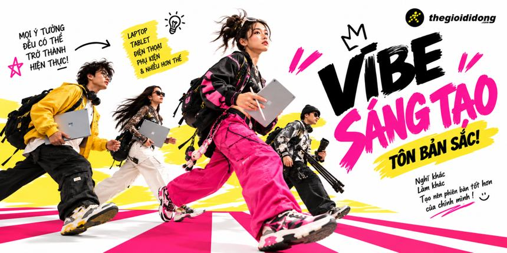
iPhone, Galaxy; MacBook, ASUS, Lenovo; iPad, Galaxy Tab; phụ kiện sáng tạo nội dung. Làm rõ trải nghiệm thực tế, tính năng và chi phí.
Lưu ý: Việc chọn thương hiệu, sản phẩm cho từng trụ cột cần căn cứ danh mục kinh doanh thực tế, tình trạng sản phẩm và thông tin xác nhận tại thời điểm triển khai.
Nguồn: đề xuất của nhóm nghiên cứu.
Luận giải định hướng chiến lược
Insight: Giữa nhiều lựa chọn, thông số và giới hạn ngân sách, người trẻ cần được hỗ trợ chọn thiết bị theo nhu cầu và điều kiện của chính mình. Nhu cầu tư vấn theo ngân sách có cơ sở khảo sát (85,4% coi giá là tiêu chí, 53,8% coi giá là rào cản, 50,4% muốn tư vấn cá nhân hóa).
Giả thuyết cần kiểm chứng: Dữ liệu chưa đo trực tiếp động cơ thể hiện bản sắc cá nhân qua thiết bị công nghệ, nên “VIBE CHẤT. TÔN BẢN SẮC.” mới là giả thuyết chiến lược, chưa phải kết luận thực nghiệm. Có thể kiểm chứng bằng phỏng vấn sâu, câu hỏi mở hoặc thử nghiệm thông điệp.
Cách kiểm chứng: So sánh hai thông điệp: (a) chức năng, chọn theo nhu cầu và ngân sách; (b) bản sắc, công nghệ đồng hành với phong cách và lối sống. Đo theo mức độ liên quan, tin cậy, khác biệt, ý định tìm hiểu sản phẩm và truy cập website.
Nhiệm vụ 1 – Brand Campaign: phủ sóng Big Idea trên hệ sinh thái mạng xã hội
TikTok: Kênh chủ lực để lan tỏa Big Idea; nguồn tham khảo công nghệ của 71,5% người tham gia khảo sát.
Threads: Không gian thảo luận hai chiều, thu thập trải nghiệm và kỳ vọng của khách hàng.
Facebook & Instagram: Mở rộng độ phủ, duy trì nhận diện nhất quán, mỗi nền tảng một cách thể hiện.
Hệ thống nhận diện và mô hình lan tỏa
Bộ nhận diện riêng cho chiến dịch gồm màu sắc, kiểu chữ, bố cục, chuyển động đồ họa và cách thể hiện Big Idea ở phần kết. Màu vàng làm chủ đạo, kết hợp đen và trắng để nổi bật trên màn hình di động; tuân thủ quy chuẩn thương hiệu hiện hành.
Nhận diện áp dụng xuyên suốt nhưng không đăng cùng một định dạng ở mọi kênh. Mô hình lan tỏa: TGDĐ khởi tạo nội dung và hashtag, KOL/KOC/creator khuếch đại, cộng đồng người dùng sáng tạo và chia sẻ.
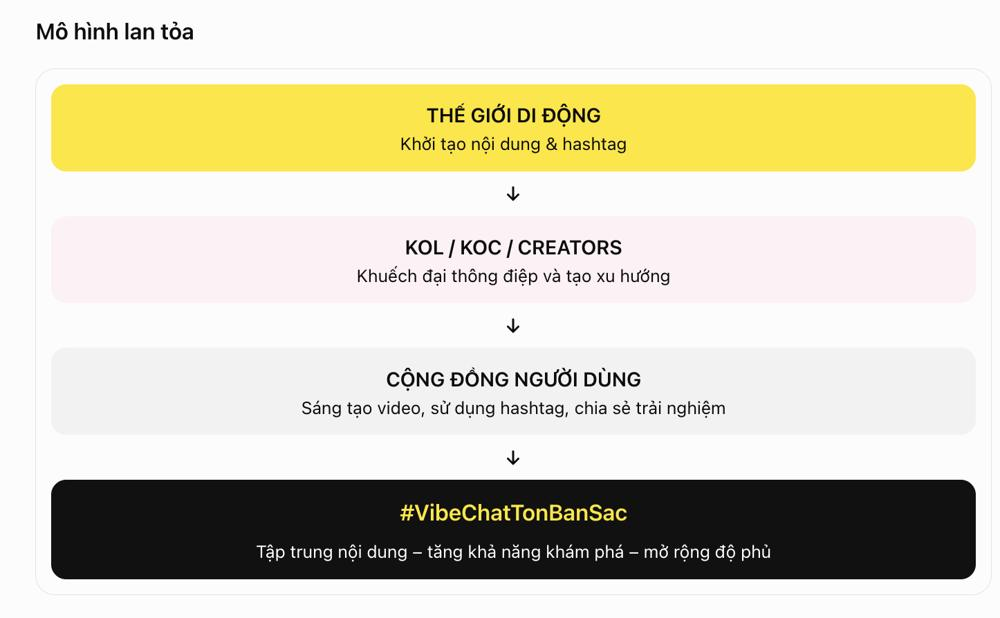
TikTok: kênh chủ lực lan tỏa Big Idea
Tình huống học tập, sinh hoạt, sáng tạo.
Theo ngân sách, nhu cầu; nêu điểm mạnh, hạn chế.
Kiến thức công nghệ áp dụng ngay.
Trải nghiệm thực tế, cách lựa chọn thiết bị.
Giữ khuyến mãi nhưng minh bạch điều kiện.
Lưu ý: Tỷ lệ 71,5% phản ánh mẫu khảo sát, không khẳng định TikTok hiệu quả nhất cho mọi mục tiêu.
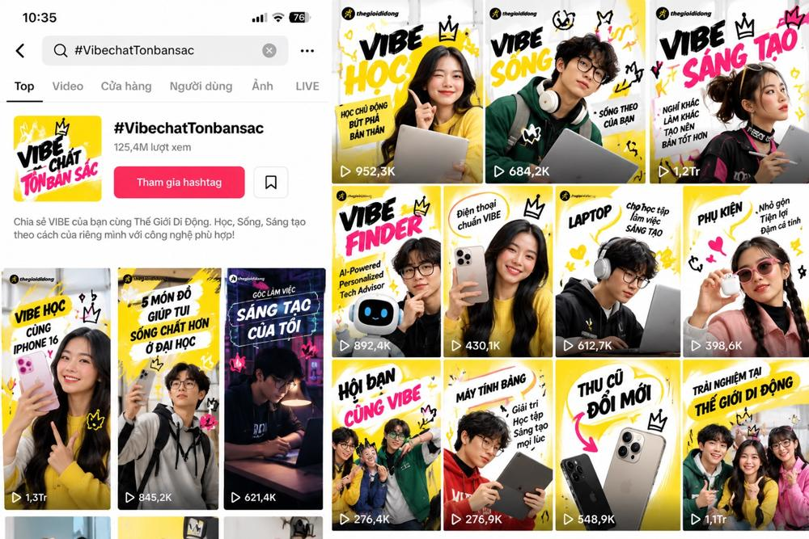
Threads: thảo luận và thu thập trải nghiệm
“Thiết bị công nghệ nào phản ánh đúng VIBE của bạn?”
“Điều gì khiến bạn phân vân nhất khi chọn điện thoại hoặc laptop?”
“Khi mua thiết bị công nghệ, bạn ưu tiên giá, cấu hình, thiết kế hay trải nghiệm sử dụng?”
Cách dùng: Phân loại phản hồi theo giá và khuyến mãi, thông tin sản phẩm, tư vấn, cửa hàng, website, hậu mãi rồi chuyển thành nội dung hoặc dẫn đến VIBE FINDER. Là dữ liệu định tính từ người chủ động tham gia, không đại diện toàn bộ khách hàng trẻ; chia sẻ cá nhân chỉ dùng lại khi có sự cho phép.
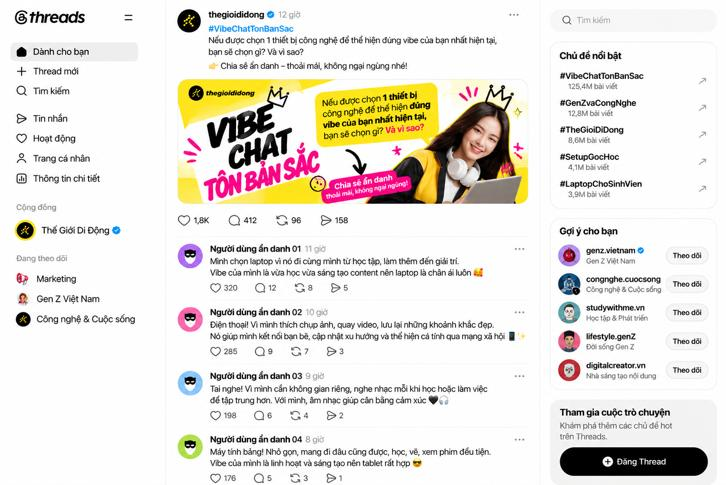
Facebook và Instagram: mở rộng độ phủ
Facebook: Ưu tiên nội dung thông tin sản phẩm, bài giải đáp, chương trình quyền lợi và nội dung cần trình bày chi tiết.
Instagram: Nhấn mạnh hình ảnh, phong cách sống và cách công nghệ xuất hiện trong các bối cảnh Vibe Học, Vibe Sống, Vibe Sáng Tạo.
Nguyên tắc: Chuyển thể nội dung theo từng nền tảng thay vì đăng lại giống nhau; giữ nhất quán màu sắc, kiểu chữ và thông điệp cốt lõi.
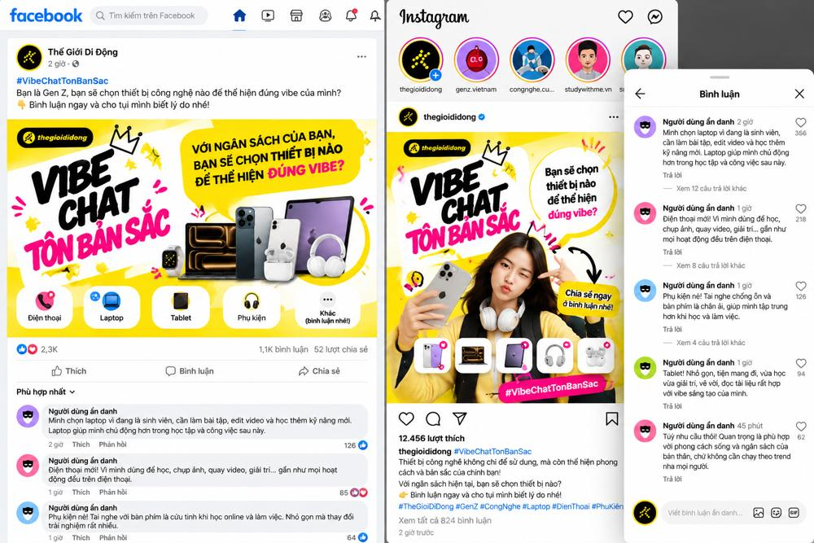
Kết nối truyền thông với hành động tiếp theo
Hành động: Dẫn đến trang sản phẩm, STUDENT VIBE+ hoặc VIBE FINDER; gắn mã theo dõi (UTM) để phân biệt nguồn truy cập.
Ba nhóm đánh giá: Nhận biết và ghi nhớ Big Idea; chất lượng thảo luận và chủ đề trải nghiệm; hành vi sau tương tác như truy cập website, dùng VIBE FINDER, tìm hiểu sản phẩm.
Threads: Với Threads, đánh giá chất lượng phản hồi và khả năng chuyển thành cải thiện nội dung, không chỉ số lượng bình luận.
Nhiệm vụ 2 – STUDENT VIBE+: chuyển hóa định vị thành quyền lợi thiết thực
Thu hút: Giảm rào cản về giá, tăng động lực mua lần đầu.
Giữ chân: Duy trì lý do quay lại TGDĐ sau khi đã sở hữu thiết bị.
Gắn kết: Xây quan hệ vượt ra ngoài giao dịch, đồng hành học tập, làm việc, sáng tạo.
Cơ sở khảo sát: 53,8% thấy giá chưa phù hợp là rào cản; 45,4% chưa thấy khuyến mãi hấp dẫn; 85,4% quan tâm giá và 83,7% quan tâm khuyến mãi, nên ưu tiên lợi ích kinh tế ở giai đoạn đầu rồi phát triển giá trị dài hạn. Mẫu thăm dò, không đại diện toàn bộ khách hàng trẻ.
01. STUDENT DEAL: ưu đãi để bắt đầu (nghìn đồng)
Lưu ý: Mức ưu đãi minh họa cho đề xuất nghiên cứu, chưa phải chính sách chính thức của TGDĐ. Cách tham gia: đăng ký miễn phí, xác minh tư cách học sinh, sinh viên, nhận ưu đãi cho giao dịch đầu tiên.
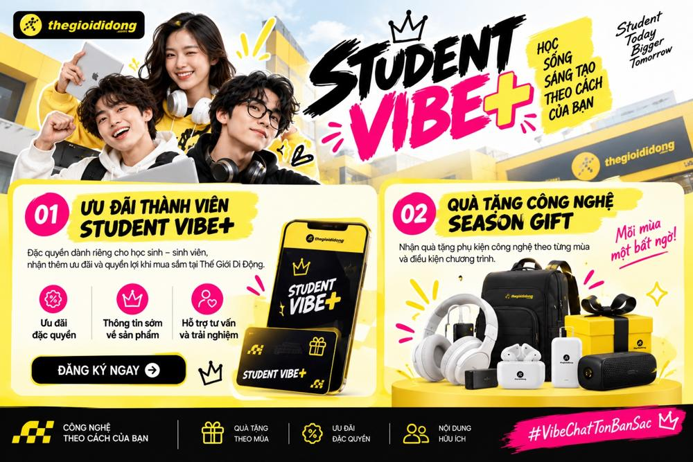
02. STUDENT CARE: có lý do để quay lại
Tư vấn công nghệ cá nhân hóa theo ngành học, nhu cầu, ngân sách và thiết bị đang sở hữu.
Nội dung hướng dẫn sử dụng, bảo quản, tối ưu hiệu suất, bảo mật dữ liệu.
Quà tặng phụ kiện theo chiến dịch (chuột không dây, giá đỡ điện thoại, túi laptop) và thông tin sớm về ưu đãi.
Điều kiện: Voucher, quà theo mùa cần bộ phận kinh doanh, tài chính thẩm định; liên hệ dựa trên sự đồng ý của khách hàng.
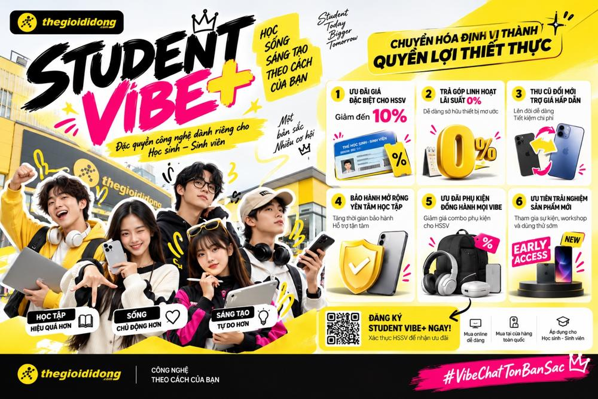
03. STUDENT COMMUNITY: gắn kết dài hạn
Tech Workshop: Workshop định kỳ về chuyển đổi số, AI trong học tập, an toàn thông tin, chọn thiết bị.
Digital Certificate: Khóa ngắn hạn cùng đơn vị đào tạo; chứng nhận do đơn vị chịu trách nhiệm cấp.
Trainee: 4–8 tuần: Digital & AI, Tech Content, Customer Experience, Event & Community.
Tech Challenge: Thử thách sáng tạo giải pháp công nghệ cho đời sống sinh viên.
Lưu ý: Cơ hội thực tập hoặc tuyển dụng không được bảo đảm tự động.
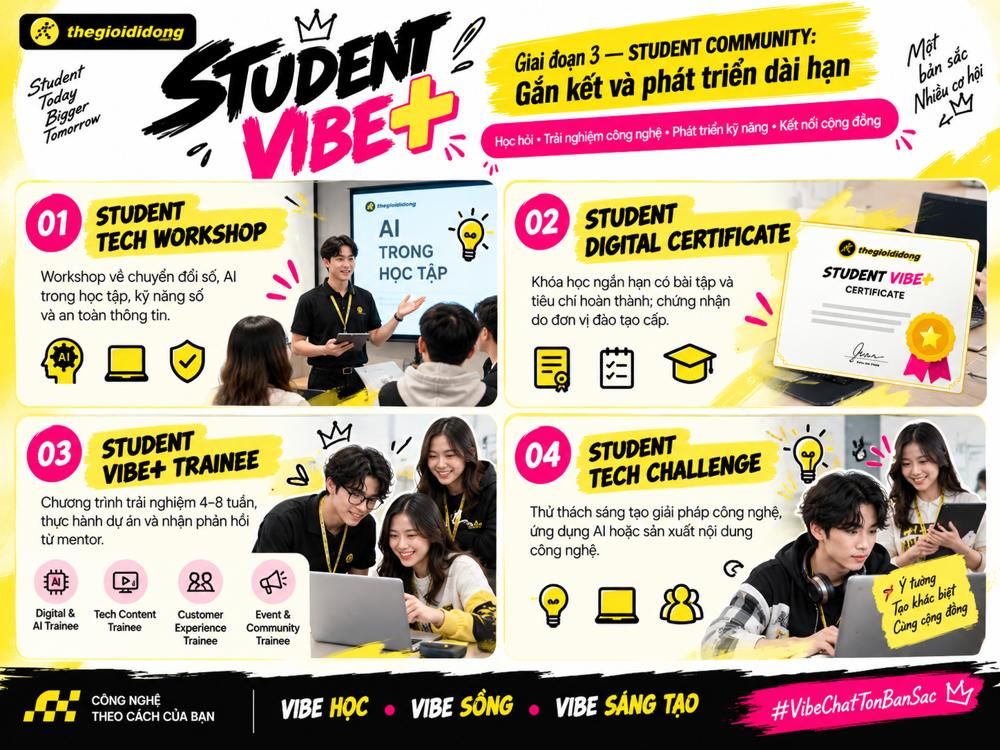
Hành trình thành viên
Đăng ký, xác minh tư cách, nhận ưu đãi ban đầu.
Mua sắm phù hợp ngân sách, nhận tư vấn.
Dùng quyền lợi tiếp theo và nội dung hữu ích.
Workshop, khóa học, thử thách hoặc trainee.
Chia sẻ trải nghiệm, góp ý cho cộng đồng.
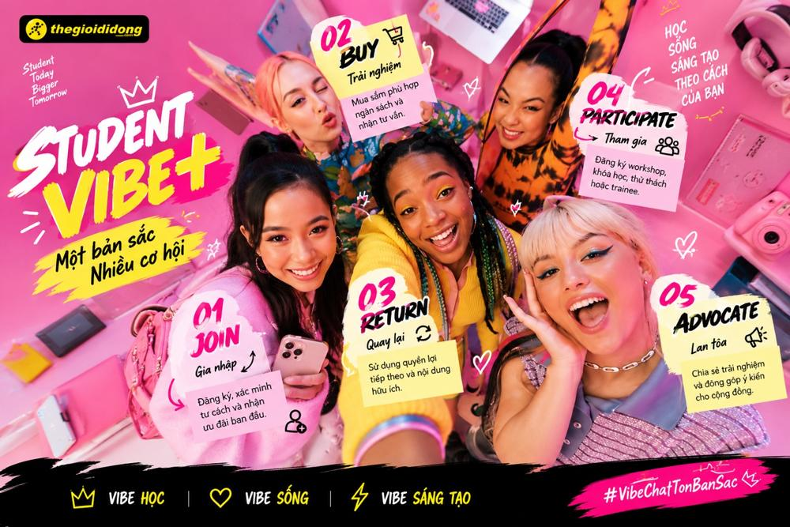
Nhiệm vụ 3 – VIBE FINDER: AI-Powered Personalized Tech Advisor
Hai lớp trải nghiệm
Lớp 1 – Khám phá VIBE: Trả lời vài câu hỏi ngắn về bối cảnh sử dụng, sở thích, cách muốn công nghệ hỗ trợ; gợi mở Vibe Học, Vibe Sống hoặc Vibe Sáng Tạo. Là cá nhân hóa trải nghiệm, không phải bài kiểm tra tính cách.
Lớp 2 – Tìm thiết bị phù hợp: Xác định loại thiết bị, ngân sách, mục đích chính, tiêu chí ưu tiên (hiệu năng, di động, pin, camera). Lọc, xếp hạng từ dữ liệu sản phẩm thực tế, trình bày tối đa ba phương án.
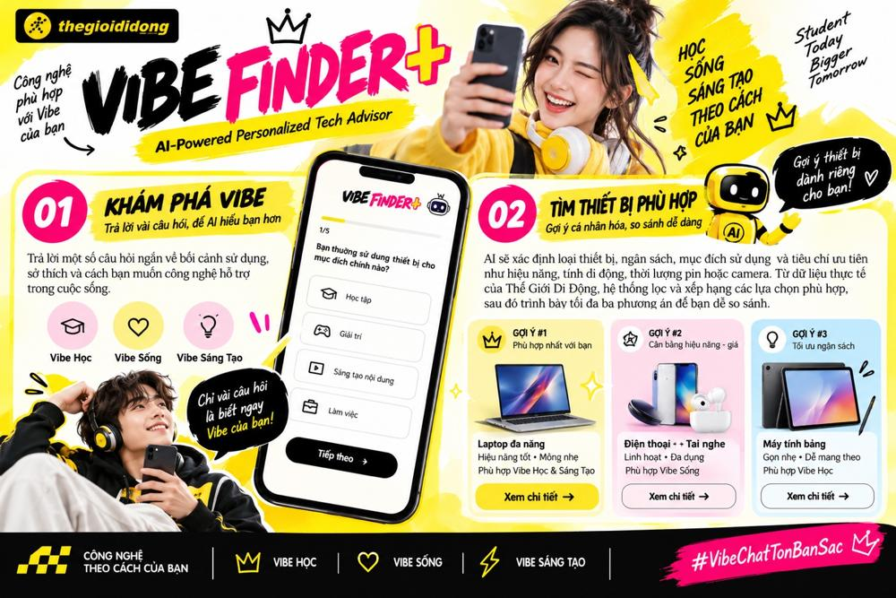
Điểm chạm triển khai
TikTok và mạng xã hội: Giới thiệu tình huống chọn thiết bị theo nhu cầu, ngân sách; dẫn người xem đến VIBE FINDER.
Website: Nơi thực hiện hai lớp trải nghiệm, xem kết quả và tìm hiểu sản phẩm.
Google Search: Tiếp cận người đang chủ động tìm thiết bị theo nhu cầu hoặc ngân sách.
Cửa hàng: Dùng kết quả khách cung cấp làm tham khảo cho tư vấn, không thay việc xác định nhu cầu trực tiếp.
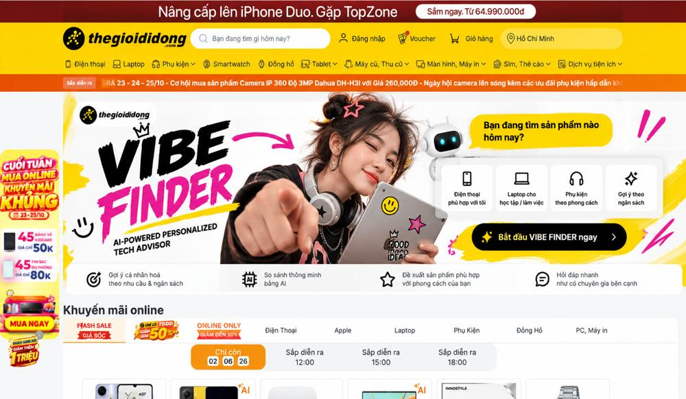
Đánh giá và điều kiện triển khai
Chỉ số: Tỷ lệ bắt đầu và hoàn thành từng lớp, tỷ lệ nhấp sản phẩm đề xuất, dùng chức năng so sánh, thêm giỏ hàng, chuyển đổi sau khi dùng.
Điều kiện: Trước khi phát triển đầy đủ cần xác định yêu cầu kỹ thuật, khả năng tích hợp dữ liệu, quy trình kiểm thử và chi phí vận hành.
Ngân sách: Khoản 240 triệu cho landing page/công cụ chọn sản phẩm không đủ xây toàn bộ hệ thống AI; cần khảo sát chi phí riêng.
Tích hợp ba nhiệm vụ trong hành trình khách hàng (Bảng 2)
| Giai đoạn | Điểm chạm và vai trò | Hành động kỳ vọng |
|---|---|---|
| Nhận biết | TikTok Brand Campaign, Threads, Facebook, Instagram, creator/KOC | Nhận diện chiến dịch, ghi nhớ Big Idea |
| Quan tâm | Video review, nội dung so sánh, thảo luận Threads, STUDENT VIBE+ | Tìm hiểu sản phẩm, chia sẻ trải nghiệm, tìm quyền lợi |
| Cân nhắc | Website, Google Search, VIBE FINDER | So sánh lựa chọn theo nhu cầu và ngân sách |
| Chuyển đổi | Trang sản phẩm, ưu đãi, cửa hàng và tư vấn | Thêm giỏ, đặt hàng hoặc mua trực tiếp |
| Duy trì quan hệ | STUDENT VIBE+, nội dung hướng dẫn, chăm sóc sau mua | Dùng quyền lợi, tiếp tục cân nhắc TGDĐ |
Luận giải: Big Idea được lan tỏa qua truyền thông, thể hiện bằng quyền lợi thực tế và cụ thể hóa bằng trải nghiệm chọn thiết bị; phản hồi Threads và hành vi trên website cung cấp dữ liệu cải thiện nội dung, tư vấn và trải nghiệm.
Tuần 1–3
Hoàn thiện bộ nhận diện, lịch nội dung; thử các bản Vibe Học/Sống/Sáng Tạo; lập quy trình phân loại thảo luận Threads; xây yêu cầu cho STUDENT VIBE+, VIBE FINDER; thiết lập đo lường, UTM, chỉ số nền.
Tuần 4–8
Phát hành nội dung ba trụ cột, ưu tiên TikTok; phối hợp creator/KOC; mở thảo luận Threads; giới thiệu STUDENT VIBE+ khi được phê duyệt; thử nghiệm VIBE FINDER theo mức sẵn sàng.
Tuần 9–12
Tăng nguồn lực cho tuyến hiệu quả; làm nội dung giải đáp từ chủ đề Threads; tối ưu đường dẫn đến trang sản phẩm, STUDENT VIBE+, VIBE FINDER; đo ghi nhớ Big Idea, tổng kết.
Ngân sách giả định 3 tỷ đồng / 12 tuần
Không phải ngân sách đã được TGDĐ phê duyệt hoặc báo giá từ nhà cung cấp.
Chi tiết ngân sách (Bảng 3)
Luận giải: Khoản 240 triệu cho landing page/công cụ chọn sản phẩm không đủ xây toàn bộ hệ thống AI; chi phí VIBE FINDER và ngân sách ưu đãi, quà tặng STUDENT VIBE+ cần khảo sát riêng. Đây là khung phân bổ sơ bộ, chưa phải tổng chi phí cho cả ba nhiệm vụ.
Cách đánh giá
Lưu ý: Lượt xem, tương tác TikTok phản ánh tiếp cận, không thay chỉ số ghi nhớ hay chuyển đổi. Cần UTM để tách traffic chiến dịch; nếu hệ thống không nhận diện đáng tin độ tuổi thì không khẳng định traffic riêng của nhóm 16–22 tuổi tăng.
KPI đề xuất và phương pháp đo lường (Bảng 4)
| Nhóm mục tiêu | KPI đề xuất | Phương pháp |
|---|---|---|
| Nhận biết Big Idea | Ít nhất 50% nhận biết thông điệp | Khảo sát trước–sau (có/không gợi ý) |
| Lưu lượng website | Tăng 30% traffic so với giai đoạn nền | Analytics, UTM, nguồn truy cập |
| Hiệu quả TikTok | Lượt xem đủ điều kiện, tỷ lệ xem hết, lượt truy cập liên kết, chi phí/lượt | TikTok Analytics, theo dõi liên kết |
| Thảo luận Threads | Số chủ đề, phản hồi có nội dung, phát hiện được chuyển thành cải thiện | Tổng hợp, phân loại định kỳ |
| Cân nhắc sản phẩm | Vào trang sản phẩm, dùng so sánh, nhấp đề xuất VIBE FINDER | Website analytics, sự kiện |
| Chuyển đổi | Thêm giỏ, bắt đầu thanh toán, đơn hàng, tỷ lệ chuyển đổi | Dữ liệu thương mại điện tử |
| STUDENT VIBE+ | Đăng ký hợp lệ, tỷ lệ dùng quyền lợi, đơn hàng thành viên, chi phí quyền lợi/đơn | Dữ liệu thành viên, báo cáo bán hàng |
| VIBE FINDER | Tỷ lệ hoàn thành từng lớp, nhấp sản phẩm đề xuất, chuyển đổi sau khi dùng | Sự kiện website, dữ liệu đơn hàng |
Luận giải: Chỉ số STUDENT VIBE+ và VIBE FINDER chỉ đo sau khi chương trình, công cụ thực sự hoạt động; nếu chưa triển khai, báo cáo tình trạng sẵn sàng và kết quả thử nghiệm, không ghi nhận chỉ số chuyển đổi giả định như kết quả thực tế. Mục tiêu 50% và 30% là KPI đề xuất, cần xác nhận sau khi có dữ liệu nền, ngân sách và phạm vi thực tế.
Kết luận
Phát hiện: TGDĐ có nhận biết (79%) và nhớ đến đầu tiên (64,9%) đáng kể, nhưng hành vi mua trong 12 tháng (52,5%) không cao hơn CellphoneS (56,7%).
Hình ảnh và rào cản: “Truyền thống – Hiện đại” thấp nhất (3,38/5); giá chưa phù hợp và khuyến mãi chưa hấp dẫn là rào cản nổi bật; người trả lời cần ưu đãi cho học sinh, sinh viên, tư vấn theo nhu cầu, so sánh và thông tin minh bạch.
Giới hạn: Khía cạnh bản sắc chưa được đo trực tiếp, nên cần xác thực thông điệp bằng nghiên cứu bổ sung và thử nghiệm trước khi kết luận đây là hướng sáng tạo hiệu quả nhất.
Tài liệu tham khảo
- Aaker, J. L. (1997). Dimensions of brand personality. Journal of Marketing Research, 34(3), 347–356.
- Decision Lab. (2025). The Connected Consumer Q4 2025.
- Keller, K. L. (1993). Conceptualizing, measuring, and managing customer-based brand equity. Journal of Marketing, 57(1), 1–22.
- Mobile World Investment Corporation (MWG). (2026). Báo cáo thường niên 2025.
- Statista. (n.d.). Consumer electronics in Vietnam.
- Yoo, B., & Donthu, N. (2001). Developing and validating a multidimensional consumer-based brand equity scale. Journal of Business Research, 52(1), 1–14.